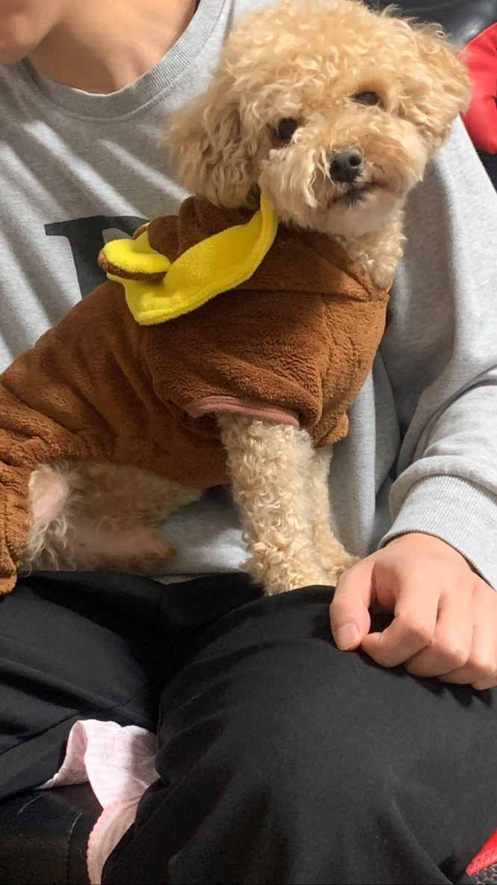

자기소개서
저의 이름은 이선용입니다.
생년월일은 2000.04.28 용띠입니다.
지원동기는 졸업을 위해 학교를 다니고 있지만 학교를 다니면서 제가 의미 없이 학교생활을 보내는 것 같아서 뭐라도 해보자 하는 마음에 신청하게 되었습니다.
취미는 게임,농구,볼링,스크린 야구 등등 있습니다.
가장 좋아하는 음식 같은 경우에는 매운 것과 징그러운 음식 빼고는 다 먹는데 특히 좋아하는 음식의 종류는 양식인데 그 중에서도 파스타를 가장 좋아합니다.
키는 182이며 몸무게는 85kg입니다. 발 사이즈는 285~290입니다.
초등학교는 사당쪽에 사당초등학교를 다녔으며 중학교는 인헌동에 인헌중학교를 다녔고 고등학교는 인헌동에 인헌고등학교를 다녔습니다. 현재 대학생인데 학교는 협성대학교를 다니고 있습니다.
반려견을 키우고 있으며 종은 토이푸들이고 이름은 아리입니다.
현재 나이는 9살이며 수컷입니다. 저와 태어난지 3개월때부터 같이 살았으며 그만큼 정도 깊고 제 말을 가장 잘 듣습니다.
사람 음식에 굉장히 관심이 많아서 밥 먹을때마다 와서 밥 같이 먹자고 안아달라고 합니다. 몸무게는 약 5kg정도 나갑니다.